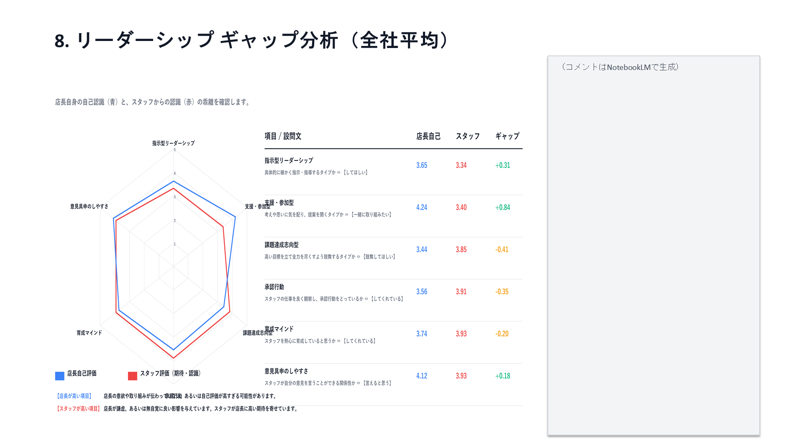

Report
経営層・人事部向けレポート
「何が業績に効いているか」を因果関係で示す。意思決定の根拠になるアウトプット
04
📈 レポート
全社サマリーと
経年推移グラフ
総合平均の推移と3 STAGEスコアの推移を時系列グラフで表示。施策の前後で何が変化したかを定量的に把握できます。
各レポートにはAI（NotebookLM）が生成した解説コメントが付属。数値を読み解く時間を省き、意思決定に集中できます。
経年比較により、改善施策の効果検証が可能。「前回より〇〇がXポイント改善した理由は？」という議論が数字で行えます


05
🎯 レポート
強み・弱みを
全体・店舗単位で出力
18の要因から組織の強み（TOP）と改善が必要な要因（WORST）を自動抽出。人数×得点で全体スコアへの影響度も算出するため、「スコアは中程度でも人数が多く全体を下げている要因」を見逃しません。
全社・地域・店舗の各単位で出力可能。同フォーマットで比較できるため、店舗間の違いも把握できます
06
📋 レポート
STAGE分析で
因果構造を把握
各STAGEのキー指標に、どの要因がどの程度影響しているかをβ係数で表示。「どこに手を打てば最も効果があるか」が数値で明確になります。
人数×得点の積で全体スコアへの寄与度も算出。「スコアは高くないが人数が多いため全体を下げている要因」も特定できます。


07
🔍 レポート
店長とスタッフの
ギャップを可視化
店長の自己評価とスタッフからの評価を比較するギャップ分析レポート。「店長は良くやっていると思っているが、スタッフには伝わっていない」という構造的な問題を検出します。
青：店長が高い項目（意図が伝わっていないか、自己評価が高すぎる可能性）
赤：スタッフが高い項目（スタッフが高い期待を寄せている）